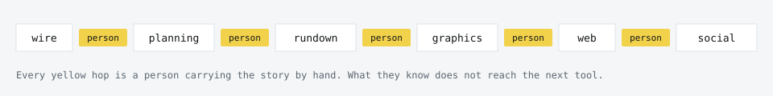
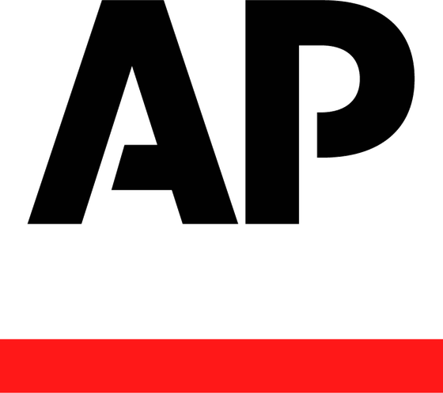
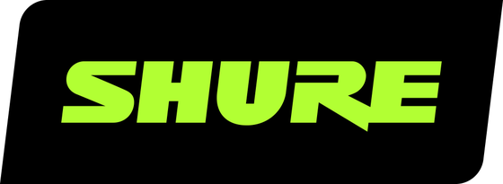
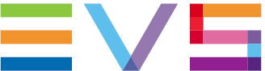
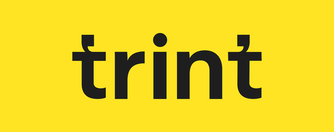
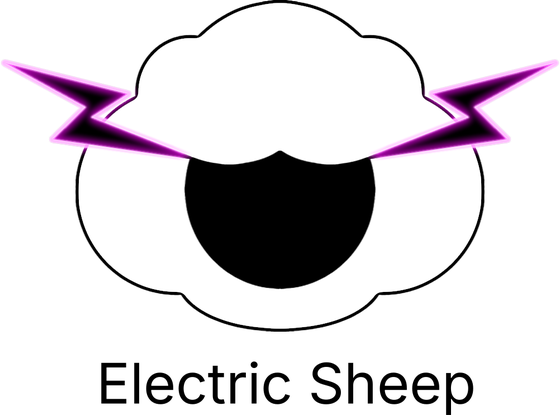
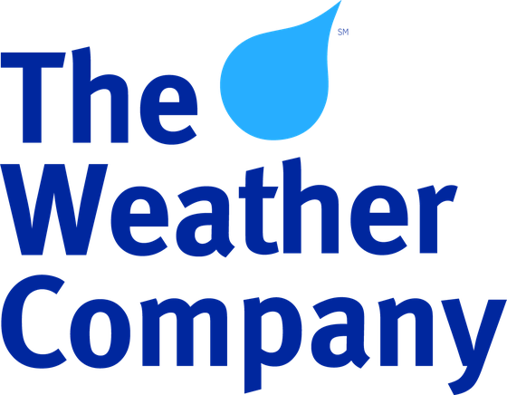

An open standard for story context in content production: a layer under the tools you already have, carrying what is true about a story at any moment in time, and over time.
{
"som_version": "1.0.0",
"message_type": "story.context",
"payload": {
"story_id": "story-8f2c",
"lifecycle": { "phase": "BREAKING" },
"editorial_gates": [ {
"gate_type": "CASUALTY_FIGURE",
"status": "PENDING",
"assigned_to": "standards_desk"
} ],
"assets": [ 3 items ],
"assertions": [ 2 items ]
}
}
Every system in the newsroom holds a fragment of the story, and every fragment is accurate. No system holds the story. The decisions that matter travel by phone, by chat, by a word across the desk. Everything talks. Nothing understands.
Write the story down once, where every tool can read it, and a decision made once is obeyed everywhere and provable afterwards. Buy a tool and one job gets smarter. Build this layer and everything you plug in gets smarter.
The Story Object Model: an open standard for what a story is, carried on an ordinary publish and subscribe bus. Tools stop talking to each other. They talk to a shared, live description of the story. Nothing sits in charge above them: each tool reads the story and decides for itself.
A hold on a casualty figure, issued in chat; the seen counter is the only record that exists. Two script versions, nobody sure which is current. Chat is where newsroom knowledge is fast. It is not where newsroom knowledge is durable.
And chat is only the visible part. Trace a story from wire to air and every hop between systems is a person carrying it by hand: a rebrief, a phone call, a word across the desk, a note in somebody's head. A human API, copying, pasting and relaying between a growing list of tools. The decisions that shaped the story never reach the tools that act on it, and they do not survive the handoff either: from one shift to the next, from Tuesday to Friday, or when the story comes back three weeks later. People are the glue, and always have been. Now the machines working alongside them are kept in the dark too, and a tool with AI in it cannot act on what it cannot see.

The context was never missing. It is stranded where no system can read it.
Anyone whose AI became useful the day they managed what it could see already knows the principle: the right context, at the right time. Now scale it to a newsroom. Fifty tools, hundreds of stories, every decision moving by the minute. You cannot hand-feed a building. So the story carries its own context, and publishes it to everything at once.
One decision, made once, obeyed everywhere, provable afterwards.
We wrote down the thing that was missing: the story itself, as an object every tool can read. It carries what the newsroom knows: what the story is about, what is decided, what is cleared, what is held. Everything that cares subscribes, reads the story, decides for itself, and what it did goes on the record.
Nothing in the standard is wired to anything else, so change your mind about any tool later and lose nothing. The knowledge lives in the layer, not the tool.
One story, carrying its own state, published once. Every system that cares hears it and decides for itself. This is the drawing the room was shown at IBC, and it is the whole architecture on one page: the stories, the bus they travel on, the rulebook the newsroom writes, and the platforms you already run with their own agents inside.
Nothing on here has to talk to anything else. Everything reads the story.
Defining what a story is, and the decisions that shape it. A story is the real world event: the thing happening out there, to people, in places, across time. It grows, splits and changes direction, and you do not know its shape until it is over. Mapping that onto a schema came down to three words.
The thing that is happening. What it is about, the sources and how far they are trusted, where it has got to, the time pressure, the premise the newsroom expects, and the claims being made and whether editorial has confirmed them.
What the newsroom gathers and makes to tell it: video, audio, scripts, graphics, transcripts. References only; the media never travels the bus. Each asset carries where it came from, who or what made it, and its evidential standing.
The moment an asset meets an audience: which outlet, which version, who saw it. One story, a pool of assets, any number of tellings. The compliance position belongs to the telling, not to the media, and the human judgement that sits between content and audience has a place in the schema.
We might not usually call it that, but this is how journalists already think. We did not invent this. We just wrote it down.
where each kind of thing lives →Rules written down once, in a place every tool can read. Written by editorial, readable by machines, in the open agentskills.io shape. Skills are passive: a Skill declares what is true, and the tool that owns the executor acts on it. If a rule cannot be evaluated, the output it guards stays held and a person decides.
Casualty figures are not broadcast until confirmed by two independent sources, both named, or an official statement. Until then, hold the figure on every output and route to the standards desk.
skill: casualty-figure-hold declares: GATE scope: story.context.editorial_gates when: confirming_sources < 2 and no official_statement then: hold · route: standards_desk authored_by: standards desk silence: valid
Same author, same scope, one copy. Nobody translated it into six products, because there is nothing to translate it into. Your policy stays yours, and no vendor needs a copy of it to work for you. Ten Skills are published with the authoring guide. Skills declare. Executors act.
The framework is open. Your workflow is yours.
Different stories, different vendors, real production tools, all reading and writing the same story. Nothing in either scenario sends a command to anything.
The human was not replaced. The human was promoted, from carrying the state to making the call.
Every era needed a new standard. Hardware had GPIs. Software had MOS, designed by engineers from broadcasters and vendors on behalf of their industry, and nobody owns it. Intelligence is the third era, and SOM meets the standards that already do their jobs brilliantly where they are. Your MOS lines stay, with a bridge that makes them smarter. What you built with MCP and agents stays.
TAMS, the BBC R&D Time Addressable Media Store, holds the frames; SOM holds what they mean to the story. At the junction, a hold pins to the exact frames it blocks, a quote knows its own in and out points, and which frames reached which audience becomes a query. Binding happens at the editorial act, never at ingest.
A standard owned by one vendor is a product. A standard owned by an industry is infrastructure.
what it looks like on the desk →The specification is the law and the schemas are the text. These are the pages that make them make sense: what it looks like on a desk, where each kind of thing lives, what the model refuses to do, and the questions everyone asks first.
workflows →
Where it goes
The question every implementer hits on the first morning. The URI test, asset or assertion, and the residency table: twelve things a newsroom builds with, and what SOM carries about each.
where it goes →
Principles
What belongs in the standard and what deliberately does not, the rules every future change has to pass, and where the standard stops.
principles →
Questions people ask
Does anything act on its own, what happens at three in the morning, who owns it, and what becomes of the systems you already run.
faq →
Argued into shape in the open: two hackathons, a weekly working group, and six months from kickstart to a working bus.
Jon Roberts, Morag McIntosh, Alex Bassett and John Boucklos. Jon Roberts, Morag McIntosh and Alex Bassett conceived the Story Object Model and led the project that developed it, alongside Brian Hopman of AP. John Boucklos co-wrote the specification, led the schema from its first ratified version to 1.0, and built the validators and the repository.
The IBC Accelerator Media Innovation Programme 2026, as the project SMART STORIES, with fourteen champion organisations and seventeen participants.






With BBC R&D on the TAMS junction. Supported by Google Cloud as title sponsor of the Accelerator project; reference bus, dashboard and TAMS store provided by Amazon Web Services; data provided by The Associated Press and The Weather Company.
And not just the specification, because a specification on its own is homework. The open register lists what is not yet settled, and the working group is where it changes.
/schema · /spec/skills/tools · /examples · /emulator/GOVERNANCE.mdNo fee and nothing to sign. Schemas, examples, tools and skills are licensed Apache 2.0; the specification prose CC BY 4.0. Those licences are the whole of the terms.
Read it. Build a basic integration. Tell us what breaks, and what is missing. If you would like to know more, including how you can join, fill in this form.
Tell us who you are and what you want to do: build against it, write Skills, run a Story Archaeology session, join the working group, or just follow the work.
Name, organisation, email, what you are and what you want to do. One consent line: occasional news about SOM, the working group and releases. Nothing else.